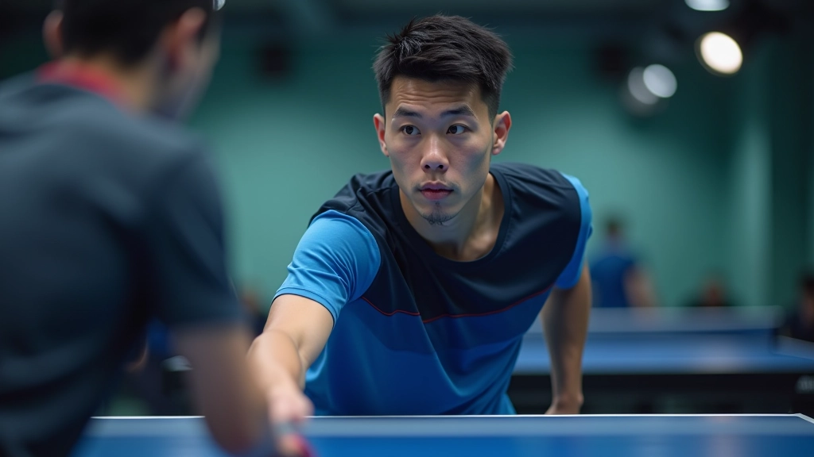
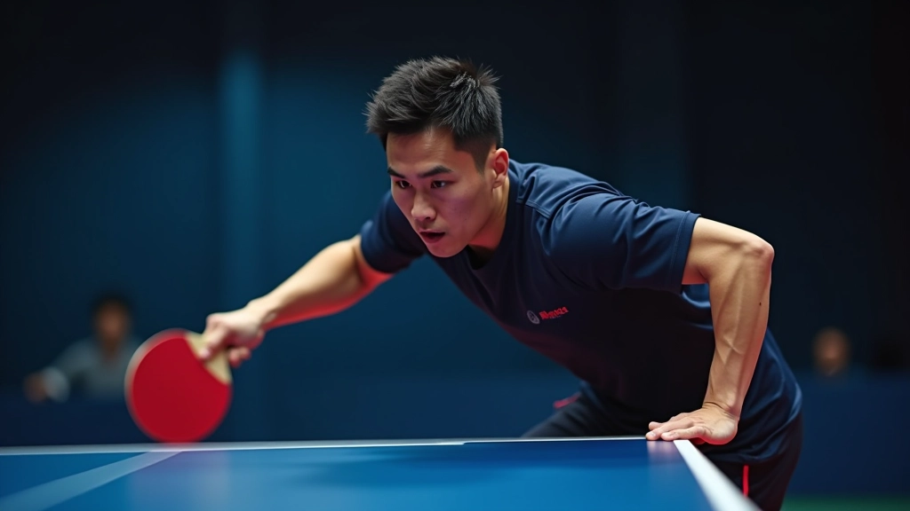

أساسيات الهجوم المضاد: البداية الصحيحة
شرح مفصل لأساسيات الهجوم المضاد وكيفية تطبيقها من البداية. تعلم الوضعية الصحيحة والحركات الأساسية التي تحتاجها.
كيفية تطبيق تقنيات الهجوم المضاد تحت الضغط واستراتيجيات للفوز بالنقاط الحرجة

الهجوم المضاد ليس فقط تقنية، إنه عقلية. عندما تلعب مباراة حقيقية، كل شيء يتغير. الضغط النفسي، السرعة، والتعب البدني — كل هذا يؤثر على أدائك. هنا ستتعلم كيفية تحويل ما تدربت عليه في الصالة إلى أسلحة فعلية في المباريات.
المحترفون لا يرتكبون أخطاء عشوائية. فهم يعرفون متى يهاجمون ومتى ينتظرون. يقرأون لغة جسد الخصم. يستشعرون اللحظات الحاسمة. في هذا الدليل، سنشرح لك كيفية بناء هذه الحدسية والتطبيق العملي للهجوم المضاد في المواقف الحقيقية.

أول خطوة لتطبيق الهجوم المضاد بنجاح هي فهم نمط لعبة الخصم. كل لاعب له عادات. يفضل بعضهم الضربات المستقيمة، والبعض الآخر يعتمد على الدوران. تراقب هذه الأنماط وتستخدمها ضده.
خلال أول ثلاث أو أربع نقاط، لا تركز على الفوز — ركز على الملاحظة. اقرأ سرعته، زاوية اقترابه من الطاولة، متى يأخذ وقتًا أطول في التحضير. هذه الإشارات الصغيرة تخبرك بماذا سيأتي بعده. وعندما تعرف ماذا يأتي، يمكنك الاستعداد بدقة أكبر.
المعلومات الموجودة في هذا الدليل تعليمية بحتة وتستند إلى خبرة عملية وملاحظات من لاعبي تنس طاولة محترفين. كل لاعب مختلف، وما ينجح مع شخص قد لا ينجح مع آخر. ننصحك بالتدرب تحت إشراف مدرب متخصص وتطبيق هذه المبادئ بشكل تدريجي.
عندما تكون المباراة متوازنة والنقاط حاسمة، لا وقت للتردد. تحتاج إلى استراتيجية واضحة. هناك ثلاث تكتيكات يستخدمها اللاعبون الجيدون للفوز بالنقاط الحرجة.
عندما يرسل الخصم كرة طويلة بعيدة عن الطاولة، هذه فرصتك. لا تنتظر أن تأتي الكرة أقرب. اخرج للأمام واضرب من بعيد. هذا يعطيك مبادرة القيادة. اضرب بقوة لكن بتحكم — الهدف ليس الخطأ، بل إجبار الخصم على الدفاع.
الخصم يتوقع سرعة معينة. غيرها. بعد ضربتين سريعتين، اضرب ببطء أكثر مع دوران أكبر. هذا يحطم إيقاعه. معظم الأخطاء تحدث عندما لا يتوقع اللاعب التغيير. استخدم هذا لصالحك في النقاط الحاسمة.
لا تلعب في المنتصف عندما تكون النقطة حاسمة. اجبر الخصم على الحركة. ضرب إلى الزاوية اليسرى، ثم اليمنى. عندما يتحرك، هناك فجوة في المنتصف. اضرب هناك. هذا تكتيك بسيط لكن فعال جدًا.

الفرق بين لاعب جيد ولاعب عظيم ليس في التقنية — إنه في العقل. عندما يكون النقاط 19-19، يشعر الجميع بالتوتر. لكن الأفضل يحافظون على هدوئهم.
قبل كل نقطة حاسمة، خذ نفسًا عميقًا. ركز على حركتك، ليس على النتيجة. قل لنفسك: "أنا مستعد. لقد تدربت على هذا." هذا ليس خيال — إنه تقنية حقيقية يستخدمها الرياضيون المحترفون. التكرار والثقة يأتيان من التدريب، لكن السيطرة على الأعصاب تأتي من العقل.
المباراة الواحدة قد تستغرق 30 إلى 45 دقيقة. التعب البدني حقيقي. عضلاتك تتعب، تنفسك يسرع، تركيزك ينخفض. كيف تحافظ على مستوى الهجوم المضاد؟
أولاً، الحفاظ على اللياقة البدنية أساسي. لا يمكنك لعب هجوم مضاد فعال إذا كنت متعبًا. لكن هناك أيضًا تقنيات فورية: عند تغيير الجهات، خذ 3 ثوانٍ لاستنشاق الهواء العميق. لا تجلس — قف مستقيمًا واسترخِ عضلاتك. شرب الماء في الاستراحات. هذه الأشياء الصغيرة تحدث فرقًا كبيرًا.
في النهاية، الهجوم المضاد يتطلب طاقة ذهنية وبدنية. كلما كنت أفضل حالًا جسديًا وعقليًا، كان أدائك أفضل. لذا تدرب بجد، لكن تدرب بذكاء. وفي المباريات، ثق بنفسك.

فريق التحرير والمراجعة
يكتبها فريق أكاديمية تنس الطاولة التحريري، متخصص في شرح تقنيات الهجوم المضاد بطريقة عملية وسهلة الفهم. نركز على التطبيق الحقيقي والتجارب الفعلية للاعبين.
شرح مفصل لأساسيات الهجوم المضاد وكيفية تطبيقها من البداية. تعلم الوضعية الصحيحة والحركات الأساسية التي تحتاجها.

اكتشف كيف يحسن اللاعبون المحترفون توقيتهم وحركتهم. ثلاث مبادئ أساسية تغير طريقة لعبك بشكل جذري.

تقنيات متقدمة للهجوم المضاد على أنواع مختلفة من الكرات. تعلم كيفية التكيف بسرعة مع كل موقف.